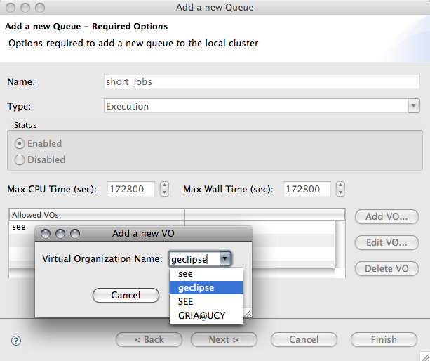

Grid Batch Systems
How to implement support for a new Batch Service?
- Access to batch services are based on SSH, I.e. a tunnel into
the server where the batch service is running. Current implementations
for
UI Components
Create new queue wizard page

Batch Service Editor

Interfaces to implement
eu.geclipse.batch.IBatchWrapper- Implement this to represent a new batch service
eu.geclipse.batch.ui.editors.BatchEditor- In method setInput add the instantiation of your batch
service wrapper